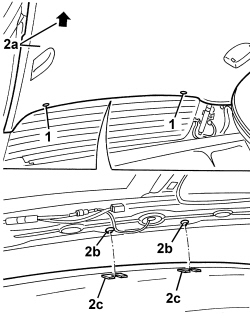
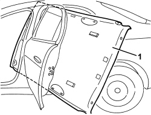
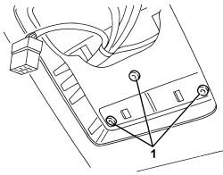
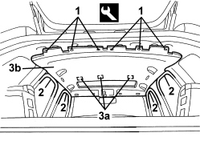
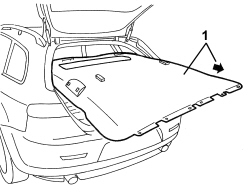

7040H16 ROOF PANEL LINING FOR VERSIONS WITH SUN ROOF - R.R
- Path
- Procedures > 70 FITTINGS > 7040 BODY INTERIOR FITTINGS AND TRIM > 7040H ROOF PANEL AND PILLARS LINING > 7040H16 ROOF PANEL LINING FOR VERSIONS WITH SUN ROOF - R.R
- Kind
- repair procedure (removal / refitting; the operation number is the code)
- Applies to
- all engines; all production periods
- Interactive page
- https://sloeber94.github.io/elrnDB/alfa/159/en/#/939004839
Applies to: all engines; all production periods
 Removing
Removing
 Refitting
RefittingFor the left and right sides
Op. 7040H30 FRONT PILLAR TRIM (ONE), LEFT OR RIGHT - R.R.
Op. 7040L40 FRONT DOOR RUNNING BOARD (ONE), LEFT OR RIGHT - R.R.
For the left and right sides
Op. 7040L44 REAR DOOR RUNNING BOARD (ONE), LEFT OR RIGHT - R.R.
Op. 7040H36 CENTRE PILLAR LOWER ELEMENT (ONE), LEFT OR RIGHT - R.R
For the left and right sides
Op. 7040H38 CENTRE PILLAR UPPER ELEMENT (ONE), LEFT OR RIGHT - R.R
Op. 7050A20 ONE-PIECE REAR SEAT CUSHION - R.R.
Op. 7050A19 REAR SEAT BACKREST - R.R
For the left and right sides.
Op. 7040H42 REAR PILLAR TRIM (ONE), LEFT OR RIGHT- R.R
Op. 7040E40 MODULAR FRONT COURTESY LIGHT - R R
Op. 7030B70 SUN ROOF MOVEMENT MOTOR - R+R
Op. 7030B34 SLIDING ROOF COMPARTMENT DECORATIVE SEAL - R+R
Op. 7040E15 SIDE COURTESY LIGHT (ONE) - R.R. ON VERSIONS WITH SUN ROOF
For the left and right sides.
Op. 7065C34 SUN BLIND (ONE), LEFT OR RIGHT - R.R.
Remove all the handles.
Op. 7065C30 GRAB HANDLE (ONE) LEFT, RIGHT OR CENTRE PASSENGER COMPARTMENT INTERIOR - R.R
For the left and right sides.
Op. 7045A10 FRONT SEAT (ONE), LEFT OR RIGHT - R.R.
For the left side.
Op. 7010A34 REAR SIDE DOOR COMPARTMENT SEAL - R.R
Op. 7040L71 BOX ON TUNNEL REAR COATING - R R
Op. 5010C32 AIR VENT ON TUNNEL COVER FOR REAR SEATS - R.R.
Op. 7040L37 GEAR LEVER TRIM - R.R
Op. 3380A44 HANDBRAKE/LINKAGE PROTECTION - R+R
Op. 7040L20 TUNNEL COVER - R.R
Op. 7040L23 TRIM ON TUNNEL COVER - R.R.
For the left and right sides
Op. 7040A65 CONSOLE SIDE CLOSING (ONE) - R.R.
Op. 7040L74 TUNNEL TRIM SUPPORT BRACKET/MOUNT R R
1. Working via the front courtesy light housing, undo the bolts fixing the roof lining.

Applies to: all engines; all production periods
1. Release the rear retaining buttons using the special tool.
Tool | Description | Function | Validity |
|---|---|---|---|
1823015000 | Knife | Retainer removal |
2. Pull the roof lining (2a) forwards and release the rear retainers (2b) from the housings (2c) for the roof lining.

Applies to: all engines; all production periods
1. Remove the roof lining extracting it via the left rear door housing.

Applies to: all engines; all production periods
Refitting
Removing- Check that the roof lining is not damaged.
- Fit the roof lining in the vehicle, via the left rear door housing.
- Attach the roof lining to the rear retainers and support it.
- Attach the rear retaining buttons.
Op. 7040L74 TUNNEL TRIM SUPPORT BRACKET/MOUNT R R
Op. 7040A65 CONSOLE SIDE CLOSING (ONE) - R.R.
Op. 7040L23 TRIM ON TUNNEL COVER - R.R.
Op. 7040L20 TUNNEL COVER - R.R
Op. 3380A44 HANDBRAKE/LINKAGE PROTECTION - R+R
Op. 7040L37 GEAR LEVER TRIM - R.R
Op. 5010C32 AIR VENT ON TUNNEL COVER FOR REAR SEATS - R.R.
Op. 7040L71 BOX ON TUNNEL REAR COATING - R R
Op. 7010A34 REAR SIDE DOOR COMPARTMENT SEAL - R.R
Op. 7045A10 FRONT SEAT (ONE), LEFT OR RIGHT - R.R.
Op. 7065C30 GRAB HANDLE (ONE) LEFT, RIGHT OR CENTRE PASSENGER COMPARTMENT INTERIOR - R.R
Op. 7065C34 SUN BLIND (ONE), LEFT OR RIGHT - R.R.
Op. 7040E15 SIDE COURTESY LIGHT (ONE) - R.R. ON VERSIONS WITH SUN ROOF
Op. 7030B34 SLIDING ROOF COMPARTMENT DECORATIVE SEAL - R+R
Op. 7030B70 SUN ROOF MOVEMENT MOTOR - R+R
Op. 7040E40 MODULAR FRONT COURTESY LIGHT - R R
Op. 7040H42 REAR PILLAR TRIM (ONE), LEFT OR RIGHT- R.R
Op. 7050A19 REAR SEAT BACKREST - R.R
Op. 7050A20 ONE-PIECE REAR SEAT CUSHION - R.R.
Op. 7040H38 CENTRE PILLAR UPPER ELEMENT (ONE), LEFT OR RIGHT - R.R
Op. 7040H36 CENTRE PILLAR LOWER ELEMENT (ONE), LEFT OR RIGHT - R.R
Op. 7040L44 REAR DOOR RUNNING BOARD (ONE), LEFT OR RIGHT - R.R.
Op. 7040L40 FRONT DOOR RUNNING BOARD (ONE), LEFT OR RIGHT - R.R.
Applies to: all engines; all production periods; only with equipment: Station Wagon
Removing
RefittingOp. 7040H30 FRONT PILLAR TRIM (ONE), LEFT OR RIGHT - R.R.
Op. 7040L40 FRONT DOOR RUNNING BOARD (ONE), LEFT OR RIGHT - R.R.
Op. 7050A20 ONE-PIECE REAR SEAT CUSHION - R.R.
Op. 7040L44 REAR DOOR RUNNING BOARD (ONE), LEFT OR RIGHT - R.R.
Op. 7040H36 CENTRE PILLAR LOWER ELEMENT (ONE), LEFT OR RIGHT - R.R
Op. 7040H38 CENTRE PILLAR UPPER ELEMENT (ONE), LEFT OR RIGHT - R.R
Op. 7040H42 REAR PILLAR TRIM (ONE), LEFT OR RIGHT- R.R
Op. 7040H12 ROOF REAR TRIM - R.R.
Op. 7040G40 LOAD COMPARTMENT LIGHT BULB HOLDER - R R
Op. 7040B22 LUGGAGE COMPARTMENT/LOAD PLATFORM MOULDING - R+R
Op. 7040B04 SIDE MOULDING (ONE) LH OR RH FOR LUGGAGE COMPARTMENT - R.R.
Op. 7040B10 LOAD PLATFORM (LUGGAGE PLATFORM) TRIM - R+R
Op. 7040B18 LOAD COMPARTMENT LOAD PLATFORM SIDE TRIM ONE LH OR RH - R.R
Op. 7040B30 L/H OR R/H SIDE SUPPORT (ONE) FOR LOAD PLATFORM COVER BLIND - ARRANGE
Op. 7040H68 TAI GATE HOUSING PILLAR TRIM (ONE), LH OR RH - R.R.
Op. 7040E40 MODULAR FRONT COURTESY LIGHT - R R
Op. 7030B70 SUN ROOF MOVEMENT MOTOR - R+R
Op. 7030B34 SLIDING ROOF COMPARTMENT DECORATIVE SEAL - R+R
- Remove both sunblinds and all the grab handles.
Op. 7040E15 SIDE COURTESY LIGHT (ONE) - R.R. ON VERSIONS WITH SUN ROOF
Op. 7065C34 SUN BLIND (ONE), LEFT OR RIGHT - R.R.
Op. 7065C30 GRAB HANDLE (ONE) LEFT, RIGHT OR CENTRE PASSENGER COMPARTMENT INTERIOR - R.R
Op. 7015A30 TAILGATE COMPARTMENT SEAL - R+R
- Lower up the rear seat backrests.
- Recline the front seat backrests into the end of travel position.
1. Working via the front courtesy light housing, undo the bolts fixing the roof lining.

Applies to: all engines; all production periods; only with equipment: Station Wagon
1. Release the rear retaining buttons using the special tool.
Tool | Description | Function | Validity |
|---|---|---|---|
1823015000 | Knife | Retainer removal |
2. Release the door housing seals in the area of the roof lining.
3. Undo Velcro retainers (3a) and lower roof lining (3b).

Applies to: all engines; all production periods; only with equipment: Station Wagon
1. Remove the roof lining extracting it via the tailgate housing.

Applies to: all engines; all production periods; only with equipment: Station Wagon
Refitting
Removing- Check that the roof lining is not damaged.
- Fit the roof lining in the vehicle, via the tailgate housing.
- Position the roof lining and attach it to the Velcro.
- Fit the door housing seals in the area of the roof lining.
- Attach the rear retaining buttons.
- Working in the front courtesy light opening, tighten the bolts fixing the roof lining.
- Lift up the front seat backrests.
- Raise the rear seat backrests.
Op. 7015A30 TAILGATE COMPARTMENT SEAL - R+R
Op. 7065C30 GRAB HANDLE (ONE) LEFT, RIGHT OR CENTRE PASSENGER COMPARTMENT INTERIOR - R.R
Op. 7065C34 SUN BLIND (ONE), LEFT OR RIGHT - R.R.
Op. 7040E15 SIDE COURTESY LIGHT (ONE) - R.R. ON VERSIONS WITH SUN ROOF
Op. 7030B34 SLIDING ROOF COMPARTMENT DECORATIVE SEAL - R+R
Op. 7030B70 SUN ROOF MOVEMENT MOTOR - R+R
Op. 7040E40 MODULAR FRONT COURTESY LIGHT - R R
Op. 7040H68 TAI GATE HOUSING PILLAR TRIM (ONE), LH OR RH - R.R.
Op. 7040B30 L/H OR R/H SIDE SUPPORT (ONE) FOR LOAD PLATFORM COVER BLIND - ARRANGE
Op. 7040B18 LOAD COMPARTMENT LOAD PLATFORM SIDE TRIM ONE LH OR RH - R.R
Op. 7040B10 LOAD PLATFORM (LUGGAGE PLATFORM) TRIM - R+R
Op. 7040B04 SIDE MOULDING (ONE) LH OR RH FOR LUGGAGE COMPARTMENT - R.R.
Op. 7040B22 LUGGAGE COMPARTMENT/LOAD PLATFORM MOULDING - R+R
Op. 7040G40 LOAD COMPARTMENT LIGHT BULB HOLDER - R R
Op. 7040H12 ROOF REAR TRIM - R.R.
Op. 7040H42 REAR PILLAR TRIM (ONE), LEFT OR RIGHT- R.R
Op. 7040H38 CENTRE PILLAR UPPER ELEMENT (ONE), LEFT OR RIGHT - R.R
Op. 7040H36 CENTRE PILLAR LOWER ELEMENT (ONE), LEFT OR RIGHT - R.R
Op. 7040L44 REAR DOOR RUNNING BOARD (ONE), LEFT OR RIGHT - R.R.
Op. 7050A20 ONE-PIECE REAR SEAT CUSHION - R.R.
Op. 7040L40 FRONT DOOR RUNNING BOARD (ONE), LEFT OR RIGHT - R.R.
Topics linked from this page (33)
- 3380A44 HANDBRAKE/LINKAGE PROTECTION - R+R
- 5010C32 AIR VENT ON TUNNEL COVER FOR REAR SEATS - R.R.
- 7010A34 REAR SIDE DOOR COMPARTMENT SEAL - R.R
- 7015A30 TAILGATE COMPARTMENT SEAL - R+R
- 7030B34 SLIDING ROOF COMPARTMENT DECORATIVE SEAL - R+R
- 7030B70 SUN ROOF MOVEMENT MOTOR - R+R
- 7040A65 CONSOLE SIDE CLOSING (ONE) - R.R.
- 7040B04 SIDE MOULDING (ONE) LH OR RH FOR LUGGAGE COMPARTMENT - R.R.
- 7040B10 LOAD PLATFORM (LUGGAGE PLATFORM) TRIM - R+R
- 7040B18 LOAD COMPARTMENT LOAD PLATFORM SIDE TRIM ONE LH OR RH - R.R
- 7040B22 LUGGAGE COMPARTMENT/LOAD PLATFORM MOULDING - R+R
- 7040B30 L/H OR R/H SIDE SUPPORT (ONE) FOR LOAD PLATFORM COVER BLIND - ARRANGE
- 7040E15 SIDE COURTESY LIGHT (ONE) - R.R. ON VERSIONS WITH SUN ROOF
- 7040E40 MODULAR FRONT COURTESY LIGHT - R R
- 7040G40 LOAD COMPARTMENT LIGHT BULB HOLDER - R R
- 7040H12 ROOF REAR TRIM - R.R.
- 7040H30 FRONT PILLAR TRIM (ONE), LEFT OR RIGHT - R.R.
- 7040H36 CENTRE PILLAR LOWER ELEMENT (ONE), LEFT OR RIGHT - R.R
- 7040H38 CENTRE PILLAR UPPER ELEMENT (ONE), LEFT OR RIGHT - R.R
- 7040H42 REAR PILLAR TRIM (ONE), LEFT OR RIGHT- R.R
- 7040H68 TAI GATE HOUSING PILLAR TRIM (ONE), LH OR RH - R.R.
- 7040L20 TUNNEL COVER - R.R
- 7040L23 TRIM ON TUNNEL COVER - R.R.
- 7040L37 GEAR LEVER TRIM - R.R
- 7040L40 FRONT DOOR RUNNING BOARD (ONE), LEFT OR RIGHT - R.R.
- 7040L44 REAR DOOR RUNNING BOARD (ONE), LEFT OR RIGHT - R.R.
- 7040L71 BOX ON TUNNEL REAR COATING - R R
- 7040L74 TUNNEL TRIM SUPPORT BRACKET/MOUNT R R
- 7045A10 FRONT SEAT (ONE), LEFT OR RIGHT - R.R.
- 7050A19 REAR SEAT BACKREST - R.R
- 7050A20 ONE-PIECE REAR SEAT CUSHION - R.R.
- 7065C30 GRAB HANDLE (ONE) LEFT, RIGHT OR CENTRE PASSENGER COMPARTMENT INTERIOR - R.R
- 7065C34 SUN BLIND (ONE), LEFT OR RIGHT - R.R.